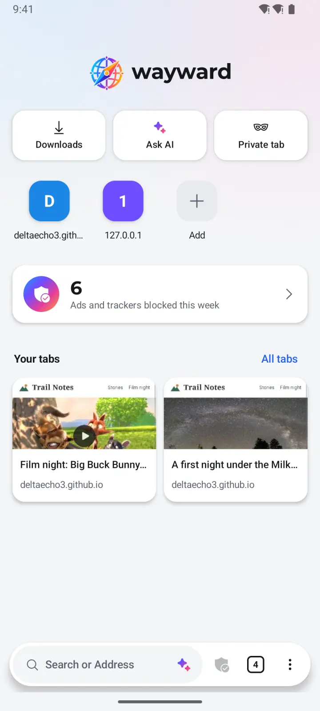
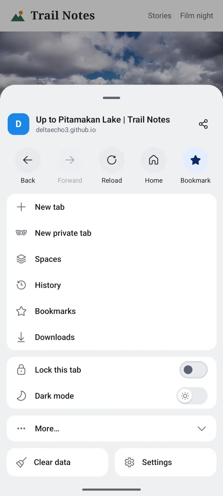
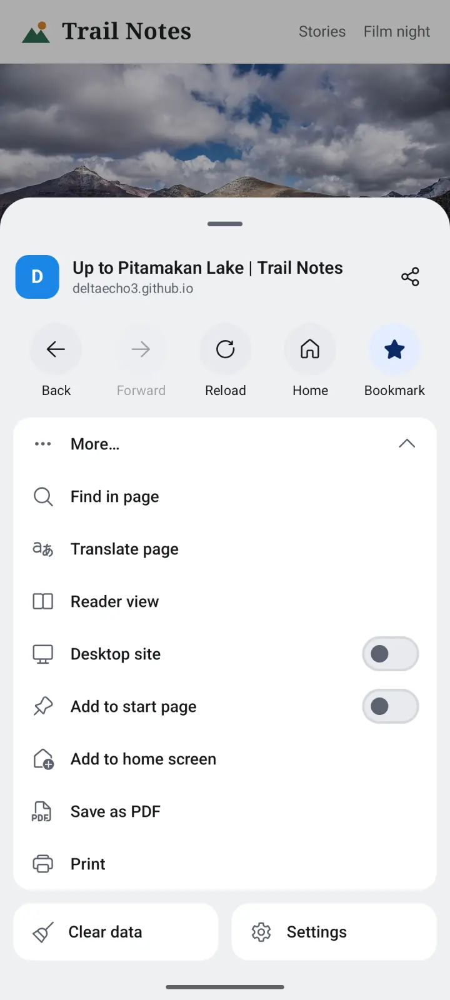
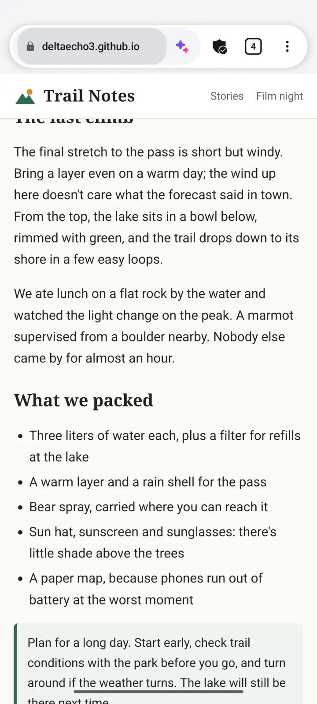
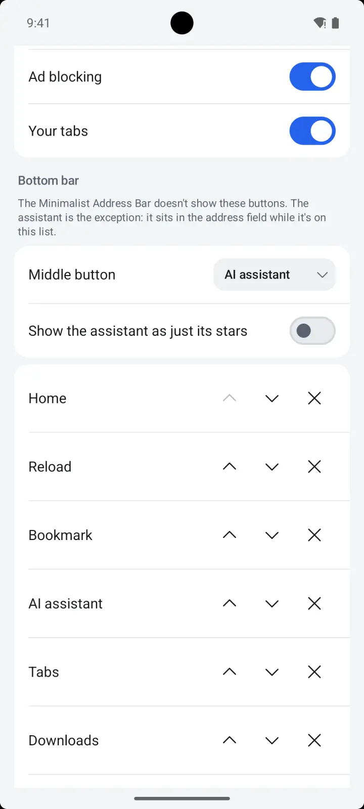

Use the Minimalist Address Bar
How-to
The Minimalist Address Bar is one slim row instead of two, which leaves more room for the page. It puts the address, Shields, Tabs and the menu in one floating pill. Everything the second row did is still there, in the menu.
Turn it on or off
- Open the ⋮ menu and tap Settings > Customize.
- Under Address bar, turn on Minimalist Address Bar.
Picking Minimal in the first-run setup turns it on too (and Normal turns it off).
What's on it
- The address field: the site's name, or Search or Address on the start page. Tap it to search or type an address. A colored dot near its end means the tab is in a space with its own sign-ins.
- The assistant's colored stars, at the end of the field, open the AI assistant (while the assistant is on your bar).
- Shields, with the page's blocked count. On the start page it rests, faded, since there's no page to shield.
- Tabs, with how many are open.
- The ⋮ menu.
There are no arrows on the bar: use your phone's Back, or the menu's round buttons.

The menu with the Minimalist Address Bar
From the top, under the page's name:
- A row of round buttons: Back, Forward, Reload, Home and Bookmark (no Bookmark on the start page). One with nothing to do right now is faded.
- The app card: New tab, New private tab, Spaces, History, Bookmarks and Downloads.
- Lock this tab and Dark mode, together in one card.
- More…, which shows the page's own tools in place of the cards: Find in page, Translate page, Reader view, Desktop site, Add to start page, Add to home screen, Save as PDF and Print, then Exit Wayward last, under a line, just above Clear data and Settings (see clear data and delete everything). Back closes it again. On the start page it holds only Exit Wayward, and it isn't there if you hid that in Settings > Customize > Menu.
- Clear data and Settings at the bottom.


At the top
With At the top picked in Settings > Customize, the whole Minimalist Address Bar goes to the top of the screen, buttons and all, and nothing is left at the bottom.

The buttons you set up for the bottom bar
Settings > Customize > Bottom bar still lists the two-row bar's buttons, in case you switch back. While the Minimalist Address Bar is on, a note there says the Minimalist Address Bar doesn't show these buttons, except the assistant, which sits in the address field while it's on that list.
